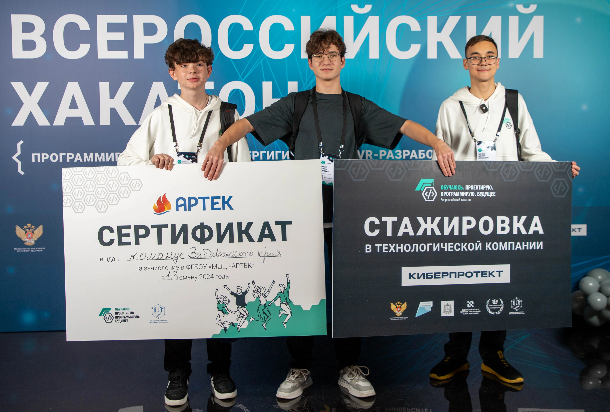

Центры цифрового образования
#цифровое_поколение_наше_будущее
Прудников Савелий
«IT-куб» Находка
«IT-куб» Чита

«IT-куб» Смоленск
Дмитров Даниил

Гриценко Ярослав
«IT-куб» Княгинино
Дзиов Марат
Фотиев Денис
Ставский Тихон и Полищук Даниил
Литвиненко Даниил
Добрухин Григорий
Огородников Даниил
Черныгов Ярослав
Зезюля Кирилл
«IT-куб» Смоленск
«IT-Куб» Ижевск
«IT-куб» Верхняя Пышма
Прудников Савелий,18 лет
«IT-куб» Сыктывкар
Педагог-наставник:
Бушенев Игорь Владимирович
Один из разработчиков онлайн-платформы «Пайконтестер» для создания и проведения соревнований по программированию.
Призёр Всероссийского чемпионата по технологическому предпринимательству «Технолидеры Москвы» 2023 года.
«IT-куб» Находка
Педагог-наставник:
Патюкова Елена Александровна
Состав команды:
Ким Эвелина, Рыличев Александр, Хон Егор
Создали виртуальную интерактивную экскурсию по одной из производственных площадок Уральского завода гражданской авиации. Решение позволяет посетителю почувствовать себя настоящим авиаконструктором: разобрать двигатель, изучить его особенности, найти возможные дефекты и собрать двигатель обратно.
Первое место в направлении «VR-разработка» на II Всероссийском хакатоне «Обучаюсь. Проектирую. Программирую. Будущее» в 2024 году.
«IT-куб» Чита
Педагог-наставник:
Метельский Тарас Леонидович
Состав команды:
Черняев Кирилл, Шишин Даниил, Миргород Максим
Создали чат-бот для новогоднего адвента по цифровой гигиене «Кибербезопасный Новый год», включая функционал для управления. Бот предназначен для повышения уровня осведомленности пользователей и помощи в усилении безопасности существующих аккаунтов и чувствительных данных.
Первое место в направлении «Кибергигиена» на II Всероссийском хакатоне «Обучаюсь. Проектирую. Программирую. Будущее» в 2024 году.
«IT-куб» Смоленск
Педагог-наставник:
Ковалёв Владислав Алексеевич
Состав команды:
Кожурина Юлия, Кравцов Григорий, Михальченков Александр и Базин Алексей
Разработали сервис Swipe CSAT для оценки удовлетворённости клиентов по различным характеристикам товаров и услуг.
Первое место в направлении «Программирование» на II Всероссийском хакатоне «Обучаюсь. Проектирую. Программирую. Будущее» в 2024 году.
Дмитров Даниил,15 лет
«IT-куб» Брянск
Педагог-наставник:
Моргунов Михаил Валерьевич
Вместе с командой разработал чат-бот доверия для Брянского машиностроительного завода. Сервис помогает оперативно собирать информацию о ситуации на предприятии и улучшать условия труда.
Диплом II степени XXIII научно-практической конференции «Старт в инновации».
Гриценко Ярослав,17 лет
«IT-куб» Барнаул
Педагог-наставник:
Шефер Светлана Анатольевна
Абсолютный победитель Национальной технологической олимпиады в профиле «Автоматизация бизнес-процессов» сезона 2023/2024.
В 2023 году стал победителем регионального этапа чемпионата по профессиональному мастерству «Профессионалы» от Алтайского края в компетенции «Разработка мобильных приложений (юниоры)».
«IT-куб» Княгинино
Педагоги-наставники:
Паньшина Арина Сергеевна
Ваняев Дмитрий Андреевич
Ваняев Дмитрий Андреевич
Состав команды:
Косолапов Степан, 8 лет; Горюнова Элина, 9 лет; Кокурин Матвей, 8 лет; Ларина Елизавета, 9 лет.
Разработали макет добычи, сортировки, транспортировки и переработки полезных ископаемых в Нижегородской области.
Национальный чемпионат по робототехнике «Красноярск 5.0», победители в номинации «Лучшая инженерная тетрадь».
Дзиов Марат,16 лет
«IT-куб» Владикавказ
Педагог-наставник:
Макаренко Мария Дмитриевна
Разработал мобильное приложение для изучения слов на осетинском языке в игровой форме — «Собери животное». Участвует в разработке портала игр на осетинском языке.
Диплом III степени на Международном форуме научной молодёжи «Шаг в будущее» (2024) в секции «Информатика, вычислительная техника, телекоммуникации» и специальный диплом «За сохранение культурного наследия коренных народов Республики Северная Осетия – Алания».
Фотиев Денис,17 лет
«IT-куб» Сыктывкар
Педагог-наставник:
Бушенев Игорь Владимирович
Разработал платформу Jeopardy Gamemaker, позволяющую проверять знания детей в формате квиза. С помощью Jeopardy Gamemaker уже проводятся игры для проверки знаний обучающихся Центра «IT-куб», технопарка «Кванториум», а также школ и лицеев Сыктывкара.
Призёр всероссийского чемпионата по технологическому предпринимательству «Технолидеры Москвы» и всероссийской олимпиады по промышленной разработке PROD.
Ставский Тихон,14 лет
Полищук Даниил,13 лет
«IT-куб» Ялуторовск
Призёры национального чемпионата по робототехнике «Красноярск 5.0»
Второе место в направлении «Дерзай, робот!» за создание управляемого робота из конструктора Lego Mindstorms Ev3.
Литвиненко Даниил,16 лет
«IT-куб» Барнаул
Педагог-наставник:
Чуйков Антон Юрьевич
Разработал мобильное приложение, с помощью которого можно подобрать и приобрести спортивные товары, а затем отслеживать их доставку.
Третье место на межрегиональном (итоговом) этапе Чемпионата по профессиональному мастерству «Профессионалы» — 2024 в компетенции «Разработка мобильных приложений (юниоры)».
Добрухин Григорий,17 лет
«IT-куб» Южноуральск
Педагог-наставник:
Шатров Антон Рудольфович
Соавтор проекта «Интерактивный баннер». Проект разработан по техническому заданию партнёра — АО «Южноуральский арматурно-изоляторный завод» — и в настоящее время внедрён.
Победитель номинации Всероссийского профориентационного конкурса «Икар».
Огородников Даниил,15 лет
«IT-куб» Липецк
Педагог-наставник:
Горяйнов Александр Олегович
Разработал метод управления роботизированными системами на основе совокупности нейросетей и систему визуализации погоды в замкнутой камере для тестирования электронных устройств «Погодный фонарь».
Диплом III степени на Международном форуме научной молодёжи «Шаг в будущее».
Черныгов Ярослав,16 лет
«IT-куб» Рязань
Педагог-наставник:
Диденко Владимир Андреевич
Разработал цифровую экосистему «Yarach» — рязанский ответ Google-сервисам, уже получивший народное признание. Это набор сервисов для работы и учебы.
Импортозаменяющий проект работает исключительно на отечественных технологиях.
Зезюля Кирилл,16 лет
«IT-куб» Брянск
Педагог-наставник:
Крестниковская Екатерина Павловна
Разработал мобильное приложение для контроля микроклимата промышленных теплиц, использующее датчики температуры, влажности и освещённости.
Диплом II степени XXII научно-практической конференции «Старт в инновации».
«IT-куб» Смоленск
Педагог-наставник:
Ковалёв Владислав Алексеевич
Состав команды:
Георгий Гусев, Алексей Ефременков, Яков Мартыненков и Артём Жуков
Разработали мобильное приложение, которое поможет автоматизировать взаимодействие сотрудников с компанией, предоставляющей услуги корпоративного питания.
Первое место в направлении «Программирование» на I Всероссийском хакатоне «Обучаюсь. Проектирую. Программирую. Будущее» в 2023 году.
«IT-Куб» Ижевск
Педагог-наставник:
Виталий Городилов
Состав команды:
Аскар Касимов, Данил Митрошин, Иван Вахрушев и Денис Ватлин
Настроили систему защиты корпоративных данных.
Первое место в направлении «Информационная безопасность» на I Всероссийском хакатоне «Обучаюсь. Проектирую. Программирую. Будущее» в 2023 году.
«IT-куб» Верхняя Пышма
Педагог-наставник:
Александр Грунчев
Состав команды:
Иван Газалтдинов, Артём Дзень и Кирилл Помазкин
Разработали симулятор профессии «сварщик», предназначенный для прохождения профессиональной пробы. Сейчас проект используется в учебных заведениях Марий Эл.
Первое место в направлении «Диджитал (VR/AR технологии)» на I Всероссийском хакатоне «Обучаюсь. Проектирую. Программирую. Будущее» в 2023 году.